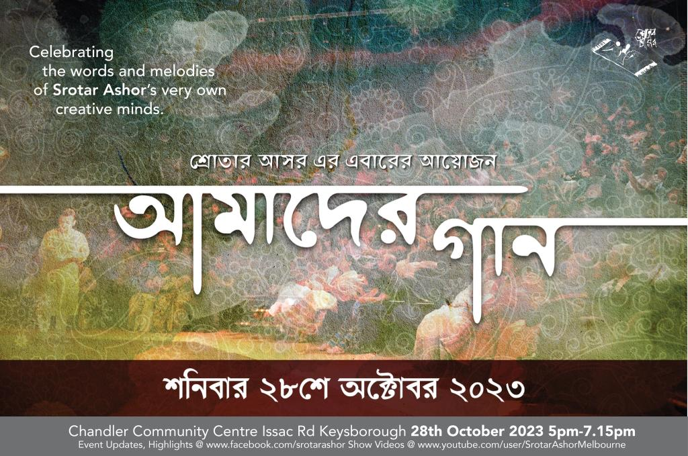
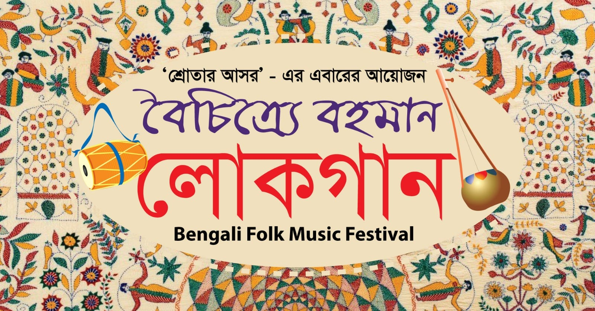

| Upcoming Events |
| |
“Srotader Gaan”
Saturday, 11th of May, 2024
Time: 5:00 pm to 7:15 pm
(Seating by 4:45 pm)
Location:Chandler Community Centre
28 Issac Road, Keysborough, Victoria
|
| |
|
| Recent Events |
|  |
Amader Gaan
October 28, 2023
5:00 pm to 7:15 pm
Chandler Community Centre
Keysborough, Victoria |
|  |
Boichitre Bohoman Lokogaan
June 17, 2023
5:00 pm to 7:15 pm
Chandler Community Centre
Keysborough, Victoria |
 |
Bangladesher Hridoy Hote
October 15, 2022
5:00 pm to 7:30 pm
The Edge, Federation Square
Melbourne, Victoria |
| |
| Event Archive |
| 2023 |
Amader Gaan (28th October) |
| 2023 |
Boichitre Bohoman Lokogaan (17th June) |
| 2022 |
E Gaan Khani Rekhe Jai (28th May), Bangladesher Hridoy Hote (15th October) |
| 2019 |
Projonmo (16th March), Jonmohin Nokhkhotro | In loving memory of Ayub Bachchu (19th October) |
| 2018 |
Terekete (3rd March), Smritir Baksho (4th August), Na Fera Shondhar Gaan (27th October) |
| 2017 |
Shure Jhore Jocchona (4th March), Troie (29th July), Studio 90 (28th October) |
| 2016 |
Tomar Pore Thekai Matha (5th March), Muhurto Gulo (6th August), Lokogiti Local (5th November) |
| 2015 |
Phagun Legechhe Boney Boney (7th March), Alor Pothojatri (6th June), Phire Dekha Dosh Bochhor (18th October) |
| 2014 |
Tomay Gaan Shonabo (15th March), Rongila Re (21st June), Iti Srotar Ashor (18th October) |
| 2013 |
Beje Uthuk Ponchomi Shur Gaane O Kobitay (2nd March), Jugol Bondee Gaane Gaane (22nd June), Ma Ke Mone Pore (5th October) |
| 2012 |
Bauliana: Gorai Theke Dirai (3rd March), Badol Diner Prothom Kodom Phool (23rd June), Gaane Gaane Char Doshok (13th October) |
| 2011 |
Jagoroner Gaan (5th March), Band Baddi (9th July), Koler Gaan (15th October) |
| 2010 |
Pach Bochor Purti Utshob (27th March), Ekobingsho (25th September) |
| 2009 |
Gitali (14th March), Rupali Porday 2 (20th June), Rongdhanu (8th August), Orup Obhilashi (November) |
| 2008 |
Bhupali (May), Bornali Shur (August), Ami Obak Hoye Shuni (1st November) |
| 2007 |
Purobi (11th February), Jonopriyo 20 (July), Rupali Porday (9th September), Bhora Nodir Baake (November) |
| 2006 |
Shurer Ei Jhorna Dhara (February), Gaaner Bhubone (March), Orun Alor Onjoli (6th May), Gaaner Bhelay Bhashiye Bela (July), Shoptoshur (September), Shamprotik Shur (11th November) |
| 2005 |
Boshonto Boron (5th March), Boishakhi Jhor (May), Amar Joto Gaan (July), Ektara Dotara (September), Shur Lohori (November) |
| |
|